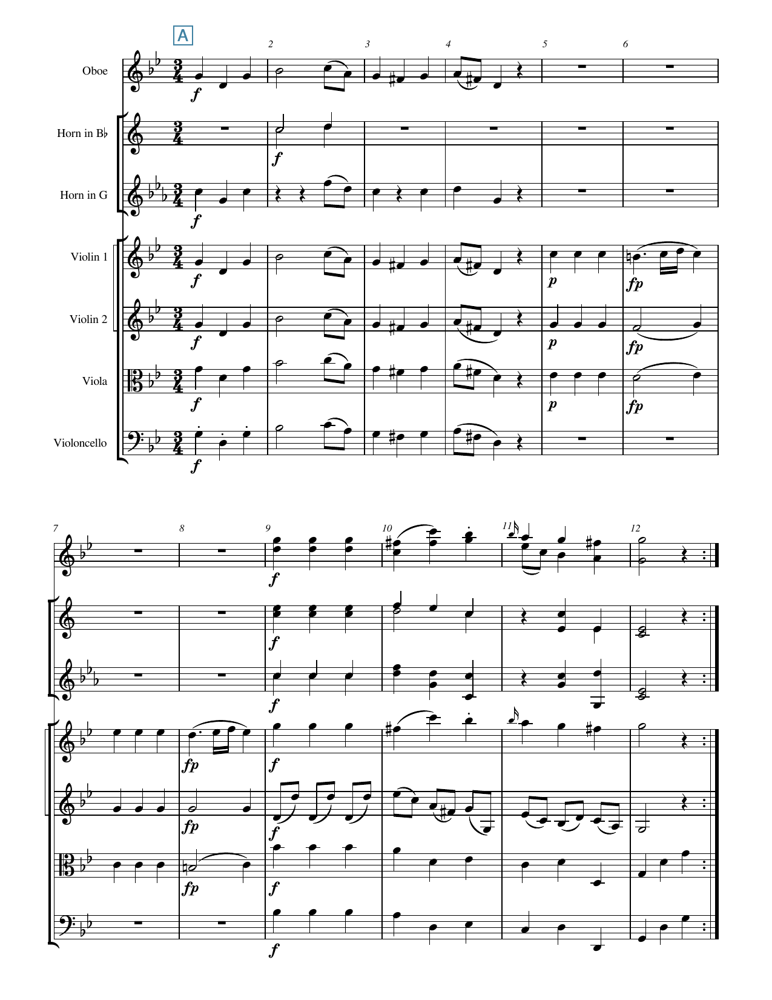
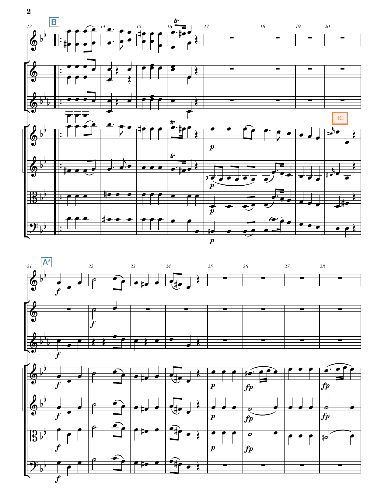
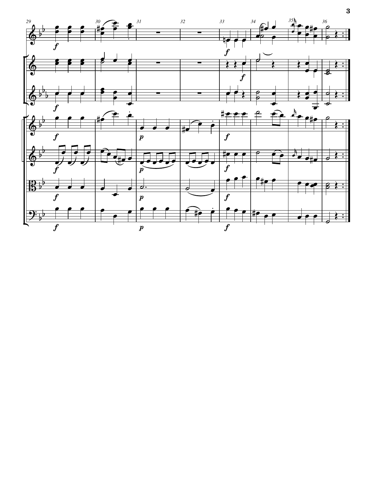
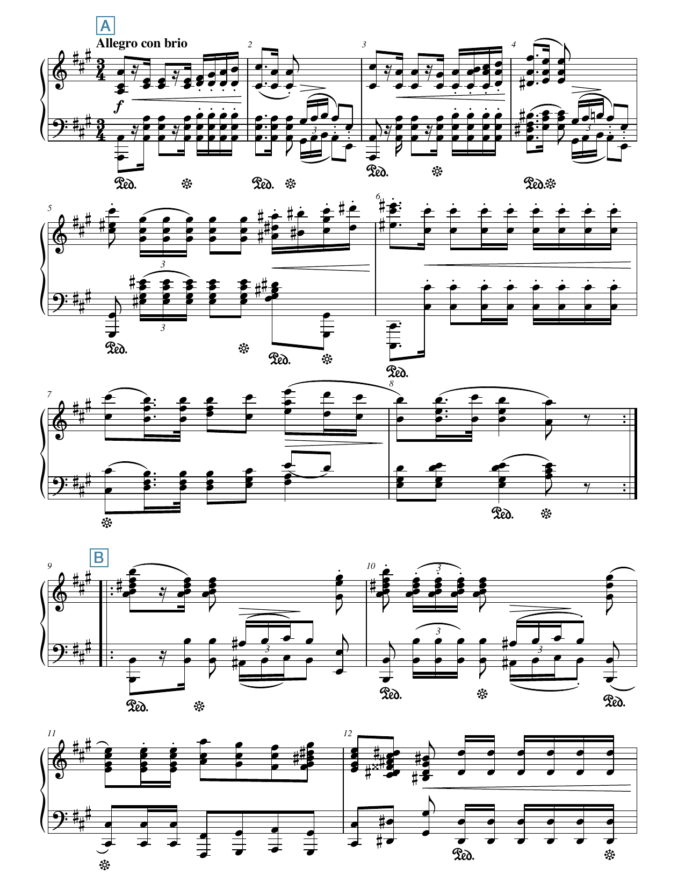
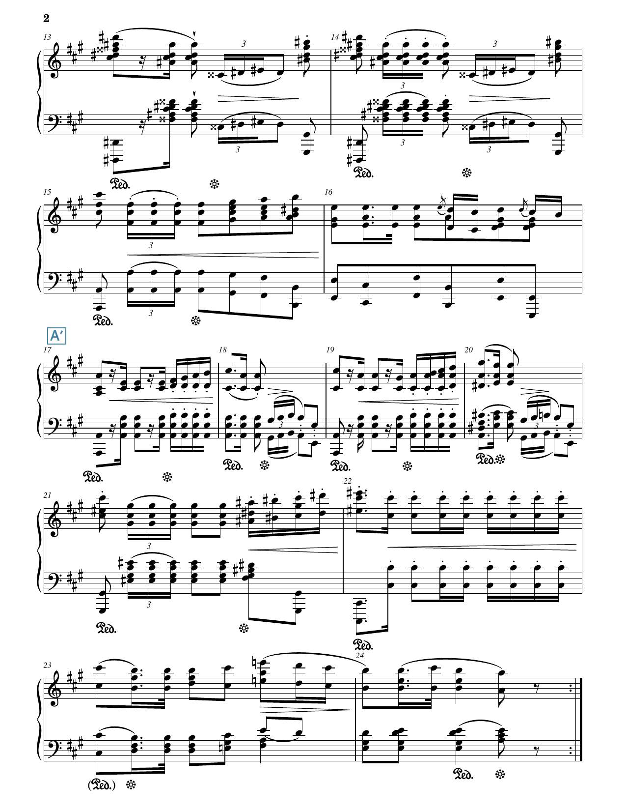
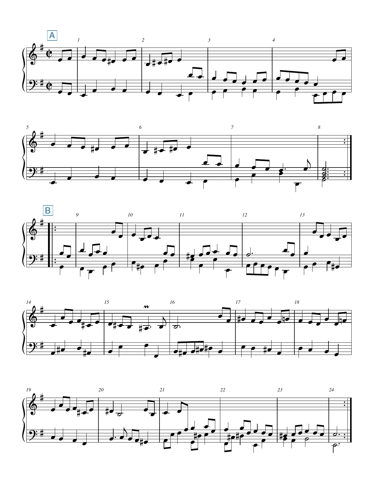
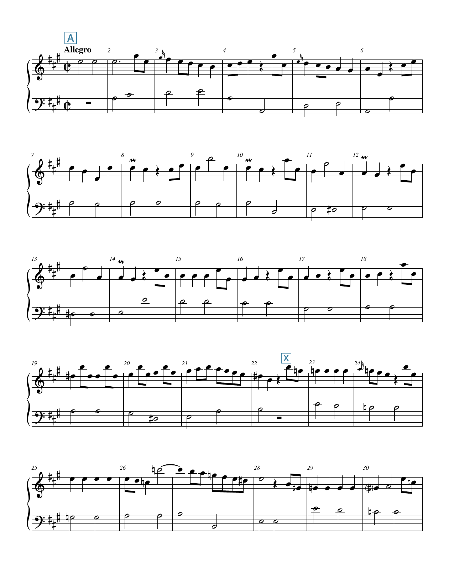
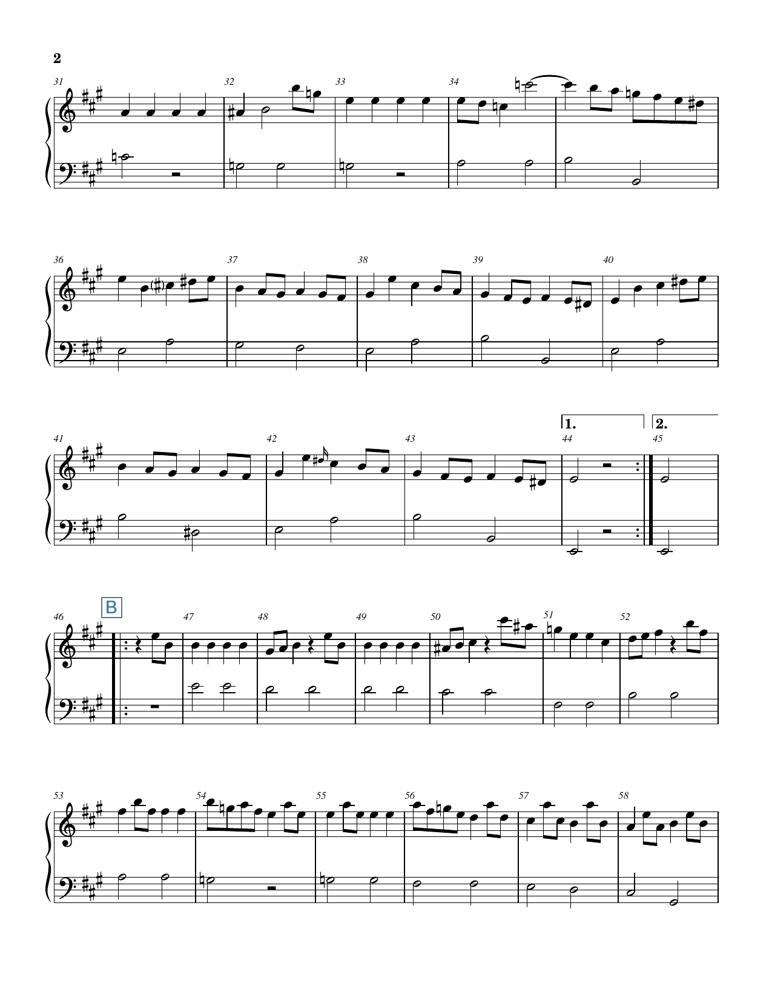
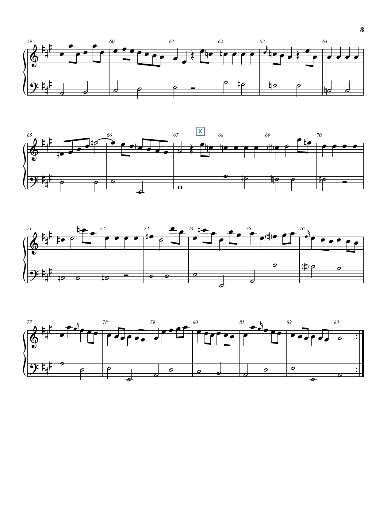

Open Music Theory：繁體中文版
二段式
重點整理
- 二段式包含兩個反覆段。
- 二段式可分為單純二段式與再現二段式。
- 單純與再現二段式都可能具有「平衡」的特徵。
在曲式中，「二段式」（binary form）指由兩個主要部分組成的形式。這兩個部分常稱為反覆段（reprises），因為通常各自都要反覆演奏一次。二段式常見於17、18及19世紀的作品，尤其大量用於舞曲。
二段式分成兩類：再現二段式（rounded binary）與單純二段式（simple binary）。兩類都可能兼具平衡（balanced）的特徵。請注意：「平衡二段式」常被列為獨立的一類，但本章不採用這種分類方式。
二段式通常篇幅較短，因此常被包含在更大型的複合曲式中，例如複合三段式。
查看英文原文
Key Takeaways
- Binary forms contain two reprises.
- Binary forms can either be simple or rounded.
- Simple and rounded binary forms may both feature a balanced aspect.
In the context of musical form, the term “binary” refers to a formal type that has two main parts. These parts are often called reprises because each is typically repeated. Binary forms are common in 17th-, 18th-, and 19th-century repertoire, and they were used heavily in dance music.
There are two types of binary form: rounded and simple. Both forms have the possibility of featuring a balanced aspect as well (note: balanced binary is often described as its own type of binary form, but that approach is not taken here).
Binary form is typically one of the shorter forms, and because of that, it is often embedded within larger, compound forms like compound ternary form.
{kind=link}
- 1st Reprise＝第一反覆段；
- 2nd Reprise＝第二反覆段。
左右兩組反覆記號各包住一個主要部分。
例1。二段式反覆結構的示意圖。
17與18世紀的古典音樂中，二段式的兩個反覆段通常各自重複，如例1所示。聽者會依序聽到：
- 第一反覆段
- 第一反覆段
- 第二反覆段
- 第二反覆段
17與18世紀的樂譜很常直接使用反覆記號。演奏者在反覆時，通常應自行即興加入裝飾，譜上不會逐一指明。但到了19世紀，作曲家更常把反覆的音樂完整寫出，而不只使用反覆記號。這樣可以指定反覆時的裝飾，改變某些音樂要素（例如配器或音域），也可以把音樂擴展得比首次呈現時更長。
{kind=link}
- Rounded Binary＝再現二段式；
- Simple Binary＝單純二段式。
- 2nd reprise contrasts with A＝第二反覆段與A形成對比；
- 2nd reprise continues A’s material＝第二反覆段延續A的材料。
- Same forms with Balanced aspect＝同樣的曲式也可具有平衡特徵；
- The (x) represents material from the tail end of the first reprise＝（x）代表第一反覆段尾端的材料。
- Rounded Binary (balanced)＝具有平衡特徵的再現二段式；
- Simple Binary (balanced)＝具有平衡特徵的單純二段式。
下半部三列依序為A(x)／BA′(x)、A(x)／B(x)、A(x)／A′(x)，各部分都以反覆記號括起。
灰色括號中的撇號表示A返回時可以有變化。
例2。各種二段式的示意圖。
查看英文原文
Repeat Structure and Types of Binary Form
Example 1. Abstract diagram of the repeat structure in binary form.
In 17th– and 18th-century classical music, each reprise of the binary form is typically repeated, as in Example 1. The listener will hear the following structure:
- Reprise 1
- Reprise 1
- Reprise 2
- Reprise 2
In 17th– and 18th-century music, it is very common to find the repeat signs written in the score. Decorative improvisation on the repeat was expected without being specified in the score. But in the 19th century, it became more common for composers to write out the repeat instead of using repeat signs. This may be done to indicate specific decorations on the repeat, to include changes in some musical domain (like instrumentation or register), and/or to expand the music beyond the length of its first statement.
While having two—usually repeated—reprises is common to all binary forms, there are two relatively distinct sub-types that capture the form’s larger melodic organization: rounded and simple, shown in Example 2. Formal organization is represented with uppercase letters and prime symbols.
The first section of a binary form piece is represented with the letter A. In both subtypes of binary form, A is the main section and presents the main melodic material (see Formal Sections in General).
B sections (the contrasting sections) vary depending on the type of binary form (Example 2). Both forms can also feature a balanced aspect (represented with an x in parentheses), as discussed further below.
Example 2. Abstract diagram of each binary form.
{kind=link}
再現二段式：𝄆A𝄇𝄆BA′𝄇。
A在第二反覆段的B之後返回，撇號表示可能有變化。
例3。再現二段式的示意圖。
在再現二段式中，A的開頭會在第二反覆段的中途，以原調返回。不必整個A段都回來，雖然常會如此；只要開頭返回即可。返回的材料可以完全相同，也常帶有些微變化，例如移高或移低八度、改變伴奏音型，或加入旋律裝飾。即使有變化，當A的材料回來時，仍應能感受到「返回」。若不確定，可以檢查和聲分析是否大致相同、和弦是否大致在相同拍位更換，以及旋律音級的順序與拍位是否相同；判斷時也要容許上述要素有些微變化。
再現二段式的第二反覆段以B段開始。B通常比A不安定，可能含有模進、半音變化或屬持續音等常見的不安定因素。不過，有些二段式的B其實相當安定，只是呈現與A不同的主題材料。例如，莫札特 G 大調弦樂四重奏 K. 80 第三樂章中段（Trio）的B段就是如此。
查看英文原文
Rounded Binary Form
Example 3. Abstract diagram of rounded binary form.
In rounded binary, the beginning of A returns in the home key somewhere in the middle of the second reprise. It is not necessary for all of A to return (though often it does)—only the beginning. While the returning material may be exactly the same, it’s also common to see slight variations, like change of octave, accompanimental pattern, and/or melodic embellishments. If there is variation, you should still be able to experience the feeling of return when the A material comes back. If unsure, you can expect the harmonic analysis to remain essentially the same, the chord changes will likely be in the same metric locations, and the scale degrees of the melody will also be in the same order and in the same metric locations; just make sure to account for the possibility of slight variation in the domains listed above.
In rounded binary form, the second reprise starts with a B section. Typically, the B section is less stable than the A section and may involve common destabilizing features like sequences, chromaticism, and dominant pedals. In some binary forms, however, the B section is quite stable but simply presents different thematic material than A (see, for example, the B section of the Trio from the third movement of Mozart’s String Quartet in G major, K. 80).
再現二段式範例
莫札特 G 小調第25號交響曲第三樂章的小步舞曲（Menuetto，例4），清楚呈現18世紀中後期常見的再現二段式。第一反覆段（第1–12小節，A）呈現相對安定的主題；第二反覆段（第13–36小節）則很容易分成兩個不同部分：B（第13–20小節）與A′（第21–36小節）。第21小節A的材料返回，以及前一小節（第20小節）的半終止，共同形成這個分界感。



- Oboe＝雙簧管；
- Horn in B♭＝B♭調法國號；
- Horn in G＝G調法國號；
- Violin 1／2＝第一／第二小提琴；
- Viola＝中提琴；
- Violoncello＝大提琴。
- A＝主要段落；
- B＝對比段落；
- A′＝A的返回；
- HC＝半終止。
- f＝強；
- p＝弱；
- fp＝強奏後立即轉弱；
- tr＝顫音。
例4。莫札特 G 小調第25號交響曲，第三樂章，小步舞曲。下載本例的 PDF 樂譜。
18世紀的再現二段式，常在A返回之前出現半終止。不過，19世紀的作曲家也可能讓這個分界銜接重疊，或用其他方式使它不明顯。蕭邦 A 大調波蘭舞曲 Op. 40 第1號的第1–24小節（例5）就是再現二段式；第16與17小節之間的銜接便是這種情況。


Allegro con brio＝有活力的快板。
- A＝主要段落；
- B＝對比段落；
- A′＝A的返回。
- f＝強；
- 漸開的力度楔形表示漸強，漸合表示漸弱；
- Ped.＝踩下延音踏板，星形記號表示放開踏板。
例5。蕭邦 A 大調波蘭舞曲 Op. 40 第1號，第1–24小節。下載本例的 PDF 樂譜。
查看英文原文
Rounded Binary Example
The Menuetto from the third movement of Mozart’s Symphony no. 25 in G minor (Example 4) is a clear instance of a rounded binary form typical of the mid- to late 18th century. After a relatively stable thematic statement during the first reprise (mm. 1–12, A), the second reprise (mm. 13–36) can easily be divided into two distinct parts, B (mm. 13–20) and A′ (mm. 21–36). The impression of a division is the result of the return of A material at m. 21 and the half cadence that precedes it at m. 20.
Example 4. Mozart, Symphony no. 25 in G minor, 3rd movement, Menuetto. Download a PDF of this example.
In the 18th century, half cadences before the return of A in rounded binary forms are quite common. In the 19th century, however, composers may also elide or otherwise obscure this boundary, as Chopin does between mm. 16 and 17 in the rounded binary form found in mm. 1–24 of his polonaise in A major, Op. 40, no. 1 (Example 5).
Example 5. Chopin, Polonaise in A major, Op. 40, no. 1, mm. 1–24. Download a PDF of this example.
單純二段式的第二反覆段，不會有開頭材料實質的返回。第二反覆段的材料可能採以下兩種方式之一（例6）：
- A′（注意撇號）：第二反覆段雖然不是第一反覆段的重複，卻延續同一類樂思。由於A的材料一直存在，就沒有開頭材料「返回」這回事。
- B：第二反覆段從頭到尾都使用相對新穎的材料。
{kind=link}
單純二段式：𝄆A𝄇𝄆B𝄇。
第二反覆段的材料與A形成對比。
或
{kind=link}
單純二段式：𝄆A𝄇𝄆A′𝄇。
第二反覆段持續使用A的材料，並非離開後再返回。
例6。單純二段式的兩種示意圖。
查看英文原文
Simple Binary Form
In simple binary, there is no substantial return of opening material in the second reprise. Instead, the material in the second reprise takes one of two possible manifestations (Example 6):
- A′ (note the prime symbol): The second reprise, though not a repeat of the first reprise, continues with the same sorts of ideas. As the A material is always present, there is no “return” to the opening material.
- B: The second reprise contains relatively new material throughout.
or
Example 6. Abstract diagrams of simple binary form.
單純二段式範例
巴赫 E 小調魯特琴組曲 BWV 996 的〈布雷舞曲〉（例7），是第二反覆段可標為A′的單純二段式佳例。第二反覆段從頭到尾延續第一反覆段的樂思。請注意，第一反覆段的開頭材料並未在第二反覆段的中途明確返回，因此本例不是再現二段式。

- A＝第一段的材料；
- 本PDF在第二反覆段開頭標B，但正文將第二反覆段分析為A′。
兩種來源標記均予保留，詳見本例前的譯註。
反覆記號分開兩個反覆段。
例7。J. S. 巴赫，E 小調魯特琴組曲 BWV 996〈布雷舞曲〉。下載本例的 PDF 樂譜。
查看英文原文
Simple Binary Example
The Bourrée from Bach’s Lute Suite in E minor, BWV 996 (Example 7) is a good example of a simple binary form where the second reprise would be labeled A′. The musical material in the second reprise simply continues the ideas from the first reprise throughout. Notice how there is no clear return of the first reprise’s opening material in the middle of the second reprise, and therefore, this is not an example of rounded binary.
Example 7. J. S. Bach, Bourrée from Lute Suite in E minor, BWV 996. Download a PDF of this example.
「平衡」（balanced）是指二段式中，第一反覆段結尾的音樂材料，會在第二反覆段的結尾再次出現。無論是單純或再現二段式，都可能有這種特徵。即使這段材料在第一反覆段位於其他調，返回時也會在作品的原調。例8中的（x）代表第一反覆段（A段）尾端的音樂，以及它在第二反覆段尾端的返回。
要認定這種返回，必須有一個接合點（crux）：也就是第二反覆段尾端開始重述原材料的那個明確時刻。從這裡開始，兩個反覆段的尾端可以逐小節直接對應。要特別注意，若再現二段式是在第二反覆段完整照搬整個第一反覆段，就不算這裡所說的平衡，因為第二反覆段尾端沒有另行接回結尾材料的接合點。
{kind=link}
具有平衡特徵的單純二段式：𝄆A(x)𝄇𝄆A′(x)𝄇。
第二反覆段延續A的材料，尾端另接回x。
或
{kind=link}
具有平衡特徵的單純二段式：𝄆A(x)𝄇𝄆B(x)𝄇。
第二反覆段以對比材料B開始，尾端接回x。
或
{kind=link}
具有平衡特徵的再現二段式：𝄆A(x)𝄇𝄆BA′(x)𝄇。
A在B後返回，尾端另接回x。
例8。各種具有平衡特徵的二段式示意圖。
查看英文原文
Balancing a Binary Form
“Balanced” is a term used to describe a binary form (either simple or rounded) in which the tail end of the first reprise returns at the tail end of the second reprise. That return will be in the piece’s home key, even if it was in another key in the first reprise. In Example 8, the (x) represents the music at the tail end of the first reprise (A section) and its return at the tail end of the second reprise.
In order to be considered a return, there needs to be a crux point—a particular moment where the restatement begins at the tail end of the second reprise. This restatement is the point at which there is a direct bar-for-bar mapping of measures between the tail ends of both reprises. Importantly, this excludes rounded binary examples where the entire first reprise is repeated verbatim in the second reprise, because there is no crux point at the tail end of the second reprise.
or
or
Example 8. Abstract diagrams of each binary form with balanced aspect.
具有平衡特徵的單純二段式範例
在較長的單純二段式中，形成平衡的材料可以相當長。多梅尼科・史卡拉第 A 大調奏鳴曲 K. 322（例9）返回的材料將近24小節，超過第一反覆段長度的一半，而且很容易用耳朵辨認。在這首作品中，（x）從第21小節中途開始，持續到第一反覆段結束的第44小節。這段材料在第二反覆段的第59小節中途返回，一直延續到全曲結束，其間增加了少許旋律裝飾，例如可以比較第26與63小節。請特別注意，第二反覆段的（x）已移回原調。換句話說，第一反覆段首次呈現（x）時，它位於 E 小調／E 大調，因此必須移回 A 調，讓作品在同一個調開始及結束。



Allegro＝快板。
- A、B＝譜上兩段的標記；
- x＝形成結尾呼應的材料標記。
1.／2.＝第一次／第二次結尾。
- 本PDF的x位置與正文第21／59小節的說法不同；
- 譜上編號及標記保留原貌，詳見本例前的譯註。
例9。多梅尼科・史卡拉第 A 大調奏鳴曲 K. 322。點此下載 PDF 樂譜。
查看英文原文
Simple Binary (Balanced) Example
In longer simple binary forms, the balancing material can be quite substantial. In Domenico Scarlatti’s Sonata in A major, K. 322 (Example 9), the material that returns is nearly 24 measures long—over half the length of the first reprise—and is easily recognizable by ear. In the Scarlatti work, (x) starts in the middle of m. 21 and ends at the end of the first reprise, m. 44. That material returns in the second reprise in the middle of m. 59 and continues to the end of the work, with a few new melodic decorations along the way (compare m. 26 and m. 63, for example). Importantly, note that (x) in the second reprise has been transposed back to the home key. In other words, when it was stated initially in the first reprise, (x) was in the key of E minor/E major, so it needed to be transposed back to the key of A in order for the work to start and end in the same key.
Example 9. Domenico Scarlatti, Sonata in A major, K. 322. Click to download a PDF score.
終止式
二段式的各部分通常以標準的終止式類型收尾：完全正格終止、不完全正格終止或半終止，尤其在18世紀的古典音樂中如此。但19世紀的風格偏好改變了對終止的預期，特別是第一部分的結尾：作曲家有時選擇較低的收束程度，以主和聲延長的進行結尾，而不採標準終止式。例如舒曼《蝴蝶》（原文作 Papillon）第1曲第8小節、第7曲第8小節，以及《兒時情景》第9曲第8小節。
查看英文原文
Cadences
Each part of the binary form commonly ends with standard cadence types (perfect authentic, imperfect authentic, or half), especially in 18th-century classical music. But stylistic preferences of the 19th century alter cadential expectations for the first part in particular: composers sometimes opted for lower levels of closure, ending with tonic-prolongational progressions instead of standard cadence types (examples: Schumann, Papillon, 1 [m. 8] & 7 [m. 8], Kinderszenen, no. 9 [m. 8]).
和聲上的開放或閉合
調性
若二段式的第一反覆段在和聲上開放，其中可能包含轉調。
不論第一反覆段結尾的和聲狀態如何，第二反覆段通常都應在原調以正格終止收尾。結尾之前可以另有其他終止式，但在共通寫作時期的調性音樂中，第二反覆段最後的完全正格終止（PAC）基本上是必守的慣例。如果作品開始與結束時位於不同的調，就呈現漸進調性（progressive tonality），而非單一調性。
查看英文原文
Keys
If the first reprise of a binary form is open, it may contain a modulation.
Regardless of the harmonic situation at the end of the first reprise, you should expect the second reprise to end with an authentic cadence in the original key. There may be additional cadences before the end, but the PAC at the end of the second reprise is essentially an obligatory convention in common-practice-period tonal music. If a piece starts and ends in different keys, it exhibits progressive tonality rather than monotonality.
開始、中途與結尾：對安定程度的預期
如同曲式的多數面向，二段式在相對安定與相對不安定之間變化，讓作品產生向前推進的力量。這來自我們對音樂進程的預期：安定地開始，變得不安定，最後恢復相對安定的感受。二段式通常有以下安排：
- 第一反覆段相對安定。
- 第二反覆段的開頭相對不安定。這種情況十分常見，有些理論家因此將第二反覆段稱為「離題段」（digression）或「離開」（departure）[1]，有時甚至不用B這個字母，以便著重音樂的功能。
- 第二反覆段的結尾恢復安定。在再現二段式中，第二反覆段裡A材料返回的時刻，通常也預期是相對安定的位置。
媒體素材署名
- reprises-diagram © Brian Jarvis，採用CC0（公眾領域貢獻宣告）。
- binary-form-diagrams-overview © Brian Jarvis，採用CC0（公眾領域貢獻宣告）。
- rounded-binary-diagram © Brian Jarvis，採用CC0（公眾領域貢獻宣告）。
- simple-binary-a-b © Brian Jarvis，採用CC0（公眾領域貢獻宣告）。
- simple-binary-a-a © Brian Jarvis，採用CC0（公眾領域貢獻宣告）。
- simple-binary-a-a-balanced © Brian Jarvis，採用CC0（公眾領域貢獻宣告）。
- simple-binary-a-b-balanced © Brian Jarvis，採用CC0（公眾領域貢獻宣告）。
- rounded-binary-diagram-balanced © Brian Jarvis，採用CC0（公眾領域貢獻宣告）。
- Green。↵
查看英文原文
Beginning, Middle, End – Stability Expectations
As with most aspects of form, binary form moves between relative stability and relative instability throughout the form which serves to give the work a linear drive due to the expectation that a work will start stable, become unstable, and ultimately end with a sense of relative stability. In binary form, you can expect that:
- The first reprise is relatively stable.
- The beginning of the second reprise is relatively unstable. This is so common that some theorists refer to the second reprise as a “digression” or “departure,”[1] sometimes forgoing the letter B altogether to focus on the function of the music.
- The end of the second reprise returns to stability. The return of A material in the second reprise of a rounded binary form is also commonly expected to be a point of relative stability.
- Binary Form – Analysis (.pdf, .docx)
- Audio Example 1 – Franz Schubert, Écossaise, D. 529, No. 3 (Starts at 1:07)
- Audio Example 2 – Franz Joseph Haydn, Piano Sonata no. 37, III, theme
- Audio Example 3 – Johann Sebastian Bach, Sarabande from Violin Partita no. 1, BWV 1002
- Audio Example 4 – Franz Schubert (1797-1828), Piano Sonata in E major, D. 157, II (mm. 1– 16)
- Audio Example 5 – Franz Schubert (1797-1828), Symphony no. 2 in B♭ major, D. 125, II
- Binary Form – Guided Composition (.pdf, .mscz)
Media Attributions
- reprises-diagram © Brian Jarvis is licensed under a CC0 (Creative Commons Zero) license
- binary-form-diagrams-overview © Brian Jarvis is licensed under a CC0 (Creative Commons Zero) license
- rounded-binary-diagram © Brian Jarvis is licensed under a CC0 (Creative Commons Zero) license
- simple-binary-a-b © Brian Jarvis is licensed under a CC0 (Creative Commons Zero) license
- simple-binary-a-a © Brian Jarvis is licensed under a CC0 (Creative Commons Zero) license
- simple-binary-a-a-balanced © Brian Jarvis is licensed under a CC0 (Creative Commons Zero) license
- simple-binary-a-b-balanced © Brian Jarvis is licensed under a CC0 (Creative Commons Zero) license
- rounded-binary-diagram-balanced © Brian Jarvis is licensed under a CC0 (Creative Commons Zero) license
- Green ↵